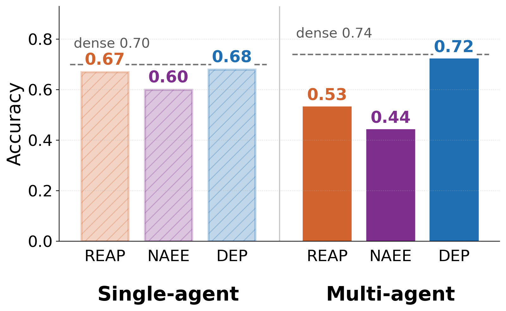
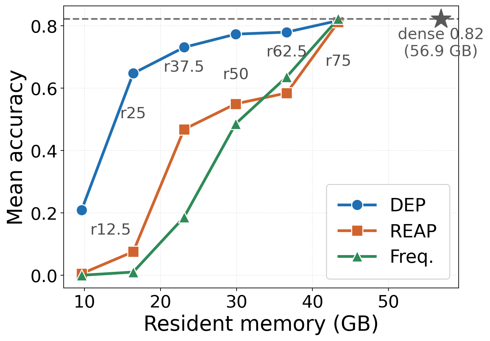

Static pruning breaks on multi-agent workloads
MoE models only activate a few experts per token, but every expert still has to sit in GPU memory. Expert pruning cuts that memory by calibrating one subset of experts offline and using it for every request.
That works for a single agent. In a multi-agent workflow, agents in different roles and tasks route to measurably different experts, and the same static masks lose much of their accuracy — enough to cancel the gain the workflow was built for.

The prompts already say which experts an agent needs
An agent's system prompt says what it will do, and its task input says what knowledge that takes. DEP trains a small predictor (a 0.5B encoder) once on workflow transcripts to turn those two prompts into a top-K expert mask for each layer.
At serving time the predictor runs once per agent turn and the mask stays fixed for the whole turn. Only the kept experts live on the GPU, so memory shrinks with the retention. Because the predictor reads text rather than an agent ID, new agents and workflows get a mask with no recalibration.
Accurate where static masks collapse
Qwen3-30B-A3B serving six multi-agent workflows found by AFlow search. Every baseline is calibrated on the same transcripts DEP trains on.
| Mean accuracy (%) | 50% kept 29.9 GB | 25% kept 16.4 GB |
|---|---|---|
| Frequency | 46.7 | 1.2 |
| REAP | 54.0 | 6.7 |
| HC-SMoE (merging) | 67.3 | 5.8 |
| DEP | 75.9 | 63.4 |
Unpruned model: 82.2% at 56.9 GB. Averaged over MATH-500, GSM8K, HumanEval+, MBPP+, MMLU and HotpotQA.

Unseen workflows
One frozen predictor serves new workflow structures, families, benchmarks and domains without retraining.
Larger models and other MoEs
DEP is the strongest pruning policy on SWE-bench Verified at 30B and 480B, and on DeepSeek-V2.5-236B.
Faster end to end
Wrong masks degenerate into repetition. Despite expert swaps, DEP finishes sooner than static masks.
Citation
@article{koo2026dep,
title = {Dynamic Expert Pruning for Multi-Agent Systems},
author = {Koo, Jabin and Abbasloo, Soheil and Lee, Sungjae and Ok, Jungseul},
journal = {arXiv preprint arXiv:2610.02951},
year = {2026}
}